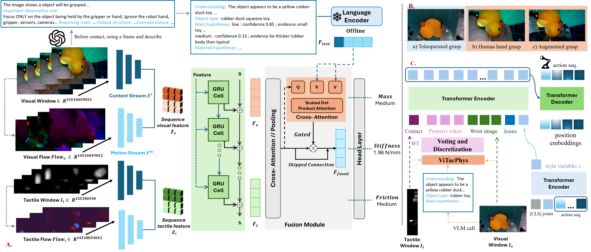
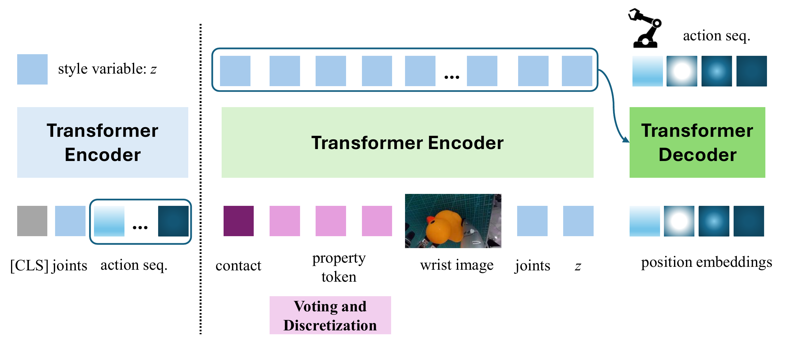
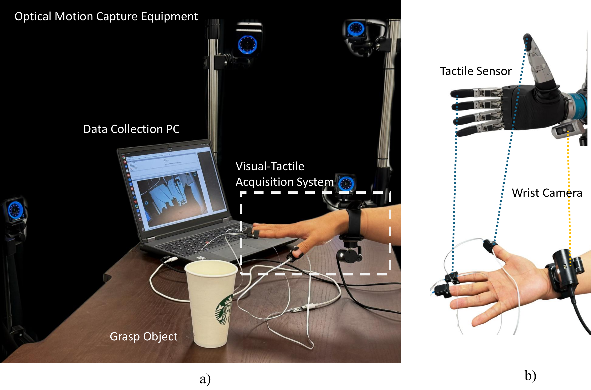
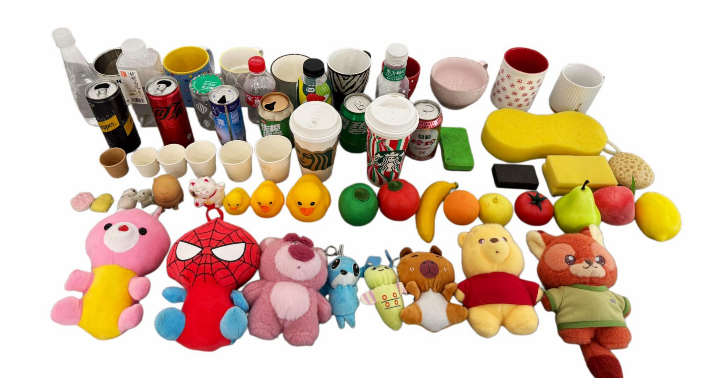
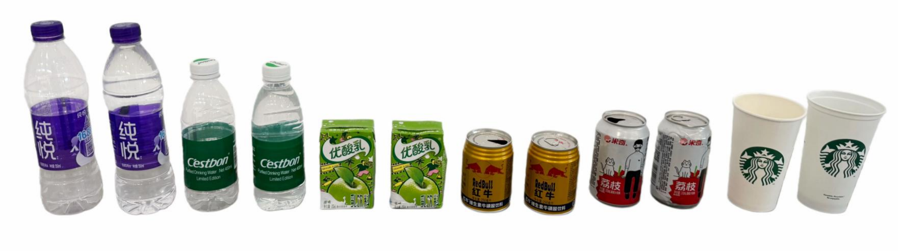
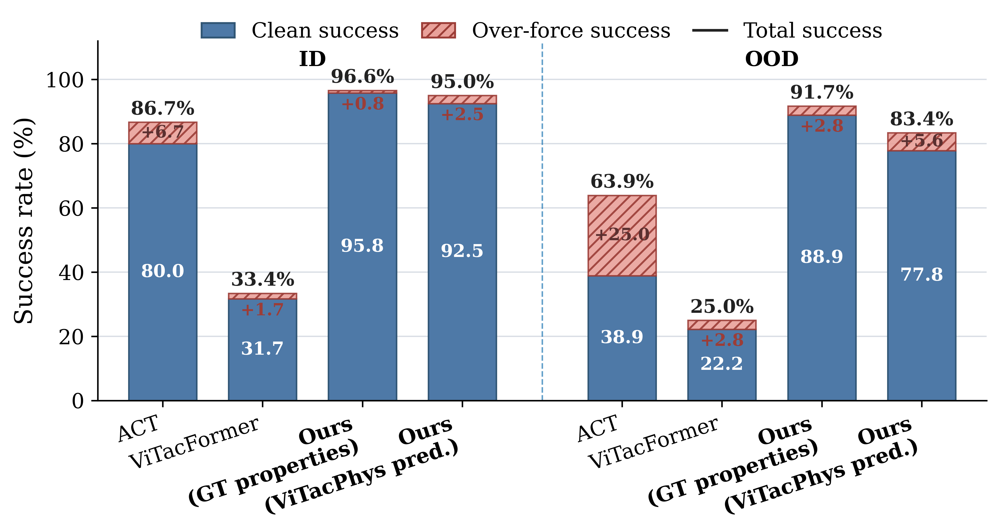
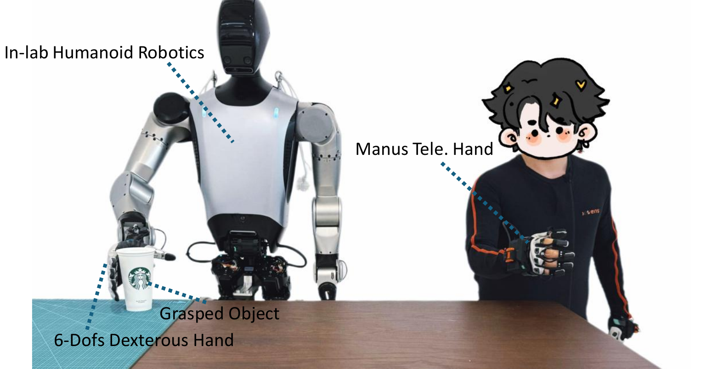

Recent vision-based action models show strong capabilities in complex manipulation, but they rarely use explicit object physical properties to adapt manipulation policies. We introduce ViTacPhys, a visual–tactile framework and data acquisition system for predicting object mass, stiffness, and friction-coefficient class from human manipulation demonstrations. Trained on data from 60 rigid and deformable objects, ViTacPhys combines temporal visual–tactile modeling, cross-attention-based multimodal fusion, and a semantic prior derived from a vision-language model (VLM). In the seen-object setting, it achieves 97.2% mass accuracy, 98.8% friction-coefficient accuracy, and 5.51% stiffness mean absolute percentage error (MAPE). On held-out objects from known categories, it achieves 87.5% mass accuracy, 97.5% friction-coefficient accuracy, and 9.08% stiffness MAPE. We transfer ViTacPhys from the human to the robot domain using limited teleoperation data, robot-style video augmentation, and matched-action human demonstrations, and deploy it as an online module for adaptive grasping. The resulting physical-property-conditioned policy achieves clean grasping success rates of 92.5% on in-distribution (ID) objects and 77.8% on out-of-distribution (OOD) objects, with total success rates of 95.0% and 83.4%, respectively. On the common OOD objects successfully grasped by both methods, its force profile is more consistent with human teleoperation than that of ACT. These results provide a system-level feasibility study of explicit physical-property estimates for real-world adaptive grasping.
ViTacPhys predicts physical properties from temporal visual-tactile observations and deploys them online as structured inputs to an adaptive ACT-style grasping policy.

ViTacPhys pipeline. Temporal visual-tactile observations and flow features are fused with offline VLM-distilled semantic priors to predict mass, stiffness, and friction. Human-to-robot transfer uses teleoperation data, matched-action human demonstrations, and visually augmented human demonstrations.

Property-conditioned ACT policy. After contact, the predicted properties are discretized into voted property tokens and injected with wrist RGB and proprioception, letting the policy adapt grasp force, finger closure, and anti-slip behavior.
The dataset contains 1,800 one-second human grasping demonstrations at 30 Hz, collected from 60 representative rigid and deformable objects using vertical-lift and lateral-shaking protocols.

Acquisition setup. Wrist RGB, fingertip tactile maps, and motion-capture markers are aligned to match the real robot's sensing layout. Mass, stiffness, and friction are then labeled with a precision scale, force–displacement fitting, and an inclined-plane test.

Everyday objects. The collection spans containers, toys, fruits, sponges, and soft objects with diverse mass, stiffness, and surface friction.

Downstream Task Data.
Each object has 15 trials for each protocol with varied approach directions and hand postures. The dataset uses wrist-mounted RGB and tactile sensors corresponding to the real robot sensing layout.
ViTacPhys is evaluated on new interactions with seen objects, held-out objects from known categories, and a one-shot setting with highly limited training-object diversity.
| Setting | Mass | Stiffness | Friction | ||||
|---|---|---|---|---|---|---|---|
| Acc.↑ | Macro-F1↑ | MAE↓ | MAPE↓ | Pearson↑ | Acc.↑ | Macro-F1↑ | |
| In distribution | 0.972 | 0.970 | 0.248 | 5.51 | 0.980 | 0.988 | 0.984 |
| Held-out object | 0.875 | 0.866 | 0.435 | 9.08 | 0.947 | 0.975 | 0.971 |
| One-shot (avg.) | 0.492 | 0.480 | 0.837 | 16.84 | 0.680 | 0.569 | 0.527 |
Stiffness in N/mm; MAPE in %. Best in-distribution scores highlighted. (Paper Table II.)
We initialize ViTacPhys from the human in-distribution model and fine-tune it with robot teleoperation data (Tele.), visually augmented dexterous-hand demonstrations (Aug.), and matched-action human demonstrations (H). The strongest OOD transfer uses all three data sources.
| Split | Initialization | Training data | Mass | Stiffness | Friction | |||
|---|---|---|---|---|---|---|---|---|
| Acc.↑ | Macro-F1↑ | MAE↓ | MAPE↓ | Acc.↑ | Macro-F1↑ | |||
| ID | Scratch | Tele. | 0.998 | 0.996 | 0.217 | 5.10 | 1.000 | 1.000 |
| Tele.+Aug.+H | 0.960 | 0.966 | 0.315 | 6.78 | 0.965 | 0.973 | ||
| Fine-tuned | Tele. | 0.907 | 0.912 | 0.201 | 4.66 | 0.949 | 0.960 | |
| Tele.+H | 0.926 | 0.927 | 0.164 | 3.66 | 0.986 | 0.989 | ||
| Tele.+Aug. | 0.922 | 0.908 | 0.171 | 3.97 | 0.950 | 0.962 | ||
| Tele.+Aug.+H | 0.910 | 0.917 | 0.203 | 4.34 | 0.962 | 0.971 | ||
| OOD | Scratch | Tele. | 0.445 | 0.340 | 1.268 | 35.90 | 0.587 | 0.443 |
| Tele.+Aug.+H | 0.412 | 0.454 | 1.596 | 42.45 | 0.687 | 0.639 | ||
| Fine-tuned | Tele. | 0.544 | 0.511 | 0.781 | 20.29 | 0.756 | 0.722 | |
| Tele.+H | 0.609 | 0.656 | 0.850 | 21.07 | 0.654 | 0.647 | ||
| Tele.+Aug. | 0.639 | 0.660 | 0.837 | 21.54 | 0.693 | 0.650 | ||
| Tele.+Aug.+H | 0.780 | 0.752 | 0.766 | 19.01 | 0.827 | 0.822 | ||
Stiffness MAE is in N/mm and MAPE is in %. Tele. = robot teleoperation, Aug. = augmented dexterous-hand demonstrations, H = matched-action human demonstrations. (Paper Table VII.)
Conditioning the policy on ViTacPhys predictions improves clean and total success, particularly on visually similar OOD objects with different physical properties, while reducing excessive-force grasps.

Adaptive grasping success. GT Properties uses ground-truth physical properties; ViTacPhys Pred. uses properties predicted online by ViTacPhys.
(Paper Table III.) Over-force success = soft object lifted but visibly crushed — lower is better.
ViTacPhys grasping a range of objects with property-dependent forces.
Side-by-side real-robot rollouts. Each clip shows, from left to right, ACT, ViTacFormer, and Ours on the same object.
Select an object below to compare all three methods on it side by side: ACT, ViTacFormer, and Ours.
Representative failures, e.g. mis-estimated properties on hard or extreme objects.

A 7-DoF manipulator with a direct-drive 6-DoF dexterous hand; fingertips carry piezoresistive tactile arrays matching the human glove. Demonstrations are collected by teleoperation with a Quantum Manus glove — 10 demos for each of 50 objects.
@article{vitacphys2026,
title = {ViTacPhys: Physical Property-Aware Grasping from Human Visual-Tactile Demonstrations},
author = {Anonymous Authors},
journal = {Under review},
year = {2026}
}